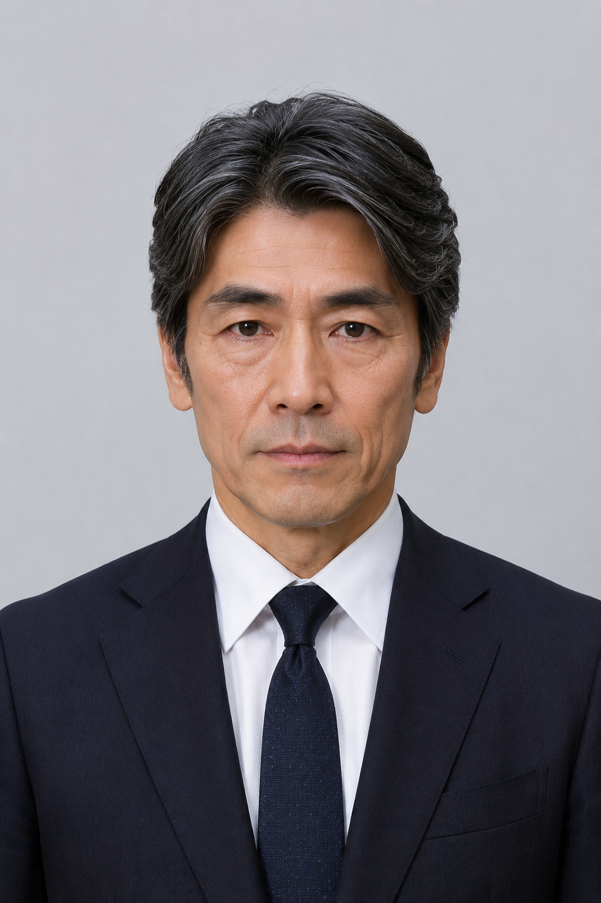

| 黑川龙 黒川 龍 |
|
|---|---|
|
 日本知名悬疑小说家 黑川龙
|
|
| 出生 | 1966年5月12日 日本东京都 |
| 逝世 | 2026年6月19日（60岁） 日本东京都目黑区 |
| 死因 | 一氧化碳中毒（警方通报认定） |
| 职业 | 小说家、编辑 |
| 活跃时期 | 1995年－2026年 |
| 文学体裁 | 悬疑、推理、社会派 |
| 代表作 | 《虚妄之冕》（绝笔遗作） 《镜之囚徒》 |
| 配偶 | 黑川百合 |
| 子女 | 黑川雪 |
| 徒弟/助理 | 伊藤健司 |
黑川龙（日语：黒川 龙／くろかわ りゅう Kurokawa Ryū，1966年5月12日－2026年6月19日），日本当代著名悬疑小说家、社会派推理巨匠。他以深入骨髓的人性剖析和对密室诡计的极致构建在文坛享有极高盛誉，被文学评论界称为“密室文学的筑墙者”。
近年来，由于突发中风导致的严重偏瘫，黑川龙鲜少在公众场合露面，其晚年大部分时间在轮椅上度过，创作工作长期依赖其助理伊藤健司协助完成。
黑川龙于1966年5月12日出生于日本东京都。早年曾就职于知名出版社担任文学编辑，凭借对市场的敏锐嗅觉发掘了多位新锐作家。1995年，黑川龙以处女作《暗夜杀机》正式转为全职作家，迅速在日本悬疑文学界崭露头角。其曾多次在公开场合表示这一年是他人生中最重要的一年。
在其创作巅峰期，黑川龙的作品多次被翻译成多国语言，并改编为极具影响力的影视剧。然而，随着年龄增长，其健康状况急剧恶化，突发的中风导致其半身偏瘫，不得不将大部分手稿整理与校对工作交由其弟子兼助理伊藤健司代为执行。
黑川龙的文字被评论家们形容为“冰冷的解剖刀”。他极度擅长将复杂的家庭伦理、金钱欲望与古典的“密室犯罪”结合起来，在封闭的物理空间内探讨“信任的崩塌”与“伪善的代价”。
他的前经纪人曾评价其：“黑川先生在文字里构建的密室，比现实世界中的铁壁还要坚不可摧。”
2026年6月19日深夜，黑川龙被发现在其位于目黑区的住所书房内身亡，享年60岁[1]。根据警视厅发出的官方通报，案发现场所有门窗均从内部反锁，呈现完整封闭状态。警方初步推断其因久病厌世情绪发作，在意外磕碰家具受伤后，最终选择将自己反锁并烧炭自杀[2]。
这一死因结论在部分书迷及密切关系者中引发了私下的猜测与微弱的争议。案发后不久，其遗孀黑川百合及助理伊藤健司宣布，将全权接手并继续推进其遗作《虚妄之冕》的盛大出版发布会。